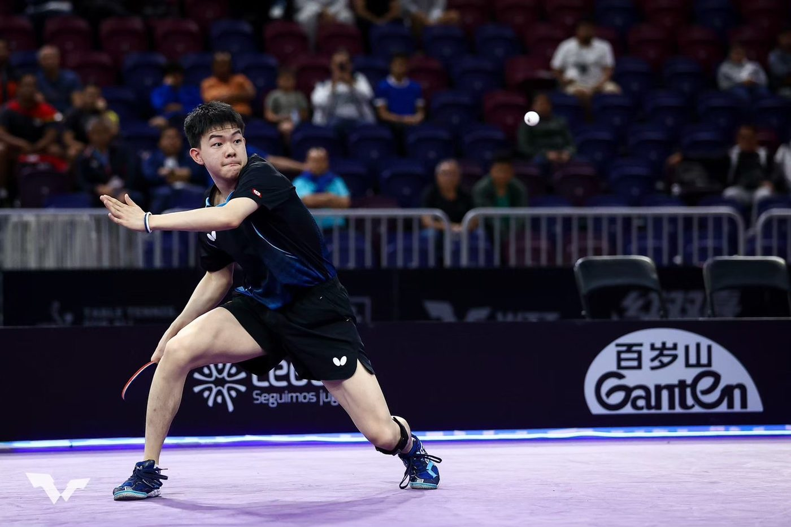
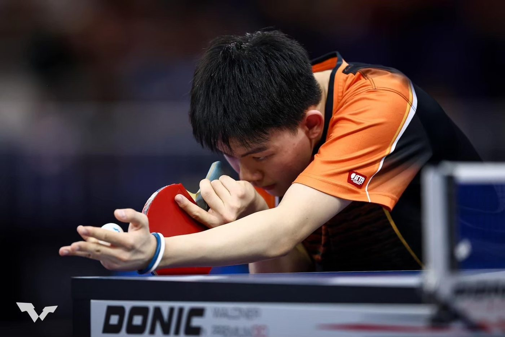

01我的故事
國小南下智淵乒乓運動館受訓
從幼稚園開始接觸桌球，當時身高太矮，需要站在墊子上，才勉強露一顆頭在桌面上揮拍，漸漸發現自己對桌球的熱愛，參加許多比賽，累積經驗，也從勝利中獲得成就感。
小學畢業後南下智淵乒乓運動館，接受莊智淵及球館教練們的指導，經過規律的訓練、教練的辛勤指導，順利地選上了青少年國手和成人國手，因此獲得出國比賽的資格和機會。


從幼稚園開始接觸桌球，當時身高太矮，需要站在墊子上，才勉強露一顆頭在桌面上揮拍，漸漸發現自己對桌球的熱愛，參加許多比賽，累積經驗，也從勝利中獲得成就感。
小學畢業後南下智淵乒乓運動館，接受莊智淵及球館教練們的指導，經過規律的訓練、教練的辛勤指導，順利地選上了青少年國手和成人國手，因此獲得出國比賽的資格和機會。


歷屆成績 · 更新於 2026/01/13
WTT澳門冠軍賽男單八強 | 高承睿 vs Truls MOREGARD
巴黎奧運男單32強賽 | 高承睿 vs Eduard Ionescu
ITTF世界桌球團體錦標賽闖進4強
Dang Qiu vs Kao Cheng Jui MS SF | WTT Contender
WTT澳門冠軍賽16強賽 | 高承睿 vs 林高遠
訓練與參賽計畫
為了奧運、亞運和其他世界級比賽做準備，將善用贊助經費於訓練、比賽、治療、營養品和其他重要用途，全方位提升身體素質和球技。
善用經費於訓練、比賽、治療和運動防護等用途，幫助承睿提升技術的同時，加強身體素質，以爭取在奧運、亞運和其他世界級比賽取得佳績。
我想達到…
技戰術訓練內容：
1. 正手中台對拉加強旋轉力量及穩定性
2. 特定技術訓練
3. 接發球處理訓練
4. 技術與戰術組合訓練
5. 體能訓練、重量訓練
積極參加國際賽，以賽代訓，在國際賽中增加大賽經驗，以訓練以下內容：
1. 比賽關鍵時刻的心理建設
2. 面對逆境時的技戰術處理方式
復健與專項體能並行，針對患部進行治療，同時透過適當的訓練保持手感：
1. 患部緩和運動
2. 專項柔軟度/敏捷性/爆發力訓練
3. 賽後檢討
1. 重量訓練
2. 耐力跑
3. 專項柔軟度、敏捷性、爆發力訓練
1. 接發球處理訓練
2. 中遠檯全方位的移位訓練
3. 正手中台對拉加強旋轉力量及穩定性
4. 攻擊準確率訓練
5. 發球搶攻訓練
6. 加強接發球技術的處理並強化細膩度
1. 拉球加轉弧圈結合快攻技術
2. 加強練習發球質量及落點
3. 整體技戰術組合練習
1. 在比賽中加強抗壓能力
2. 比賽關鍵時刻的心理建設
3. 賽後檢討
4. 患部恢復措施：例行性復健、增生療法、震波或PRP
需求項目與數量（依官方頁面）
| 選手營養費 | NT$ 140,000 |
| 移地訓練費 | NT$ 1,200,000 |
| 參賽旅運費 | NT$ 2,330,000 |
| 運動防護費 | NT$ 300,000 |
| 訓練器材裝備費 | NT$ 30,000 |
| 經費需求合計 | NT$ 4,000,000 |
標示「不公開」者為官方頁面未揭露之欄位。